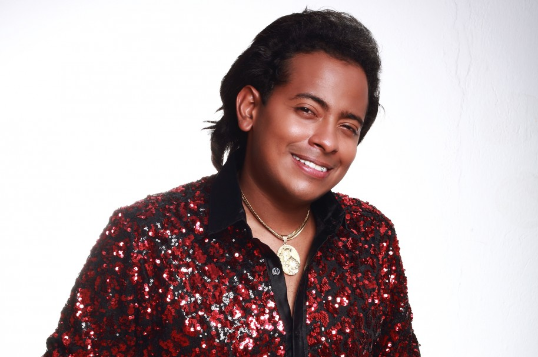

Diomedes Díaz Maestre (La Junta, La Guajira, 26 de mayo de 1957 - Valledupar, Cesar, 22 de diciembre de 2013) fue un cantautor colombiano de música vallenata. Fue uno de los artistas más importantes del género y es considerado uno de los máximos exponentes del vallenato. A lo largo de su carrera, Diomedes Díaz lanzó numerosos álbumes y canciones que se convirtieron en clásicos del vallenato, ganando reconocimiento tanto a nivel nacional como internacional.
| Nombre | Fecha de nacimiento | Lugar de nacimiento | Fecha de fallecimiento |
|---|---|---|---|
| Diomedes Díaz | 26 de mayo de 1957 | La Junta, La Guajira, Colombia | 22 de diciembre de 2013 |